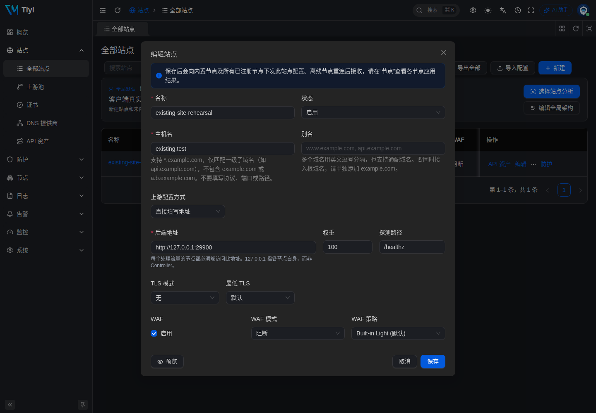
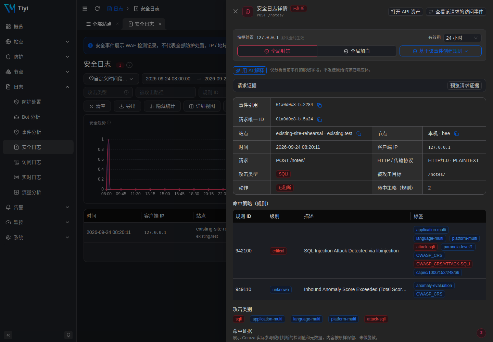
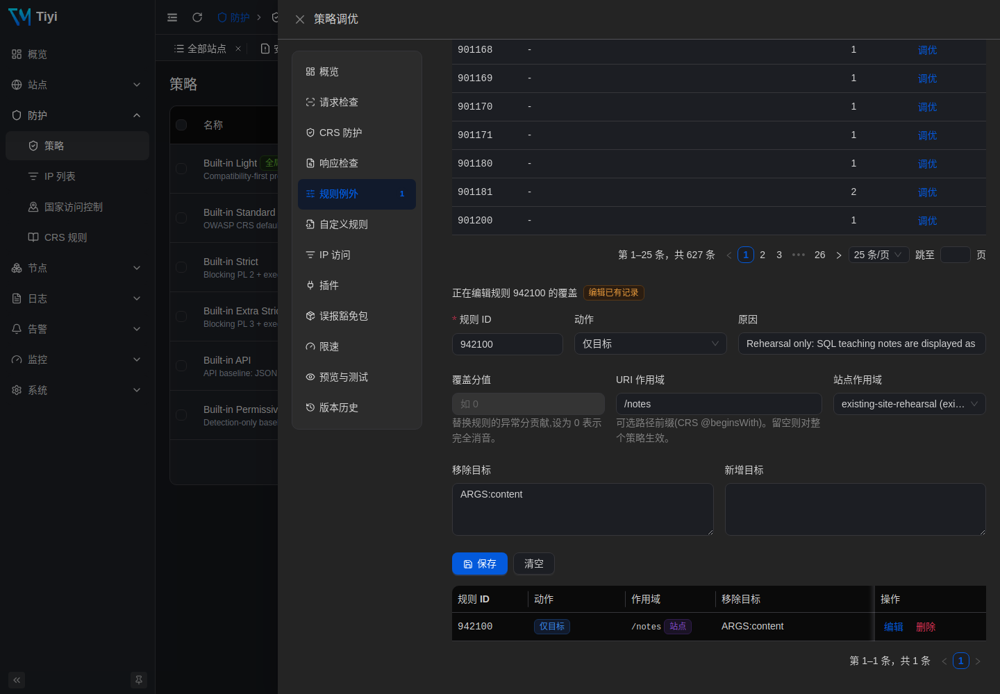

已有 Nginx 网站接入太一：验证、误报调整与恢复
保留 Nginx 作为入口，把太一放到它与原应用之间。先在独立端口演练，再决定如何接入自己的业务。这篇教程包含完整示例、真实后台截图，以及恢复原访问路径的操作。
接入前：请求 → Nginx :29180 → 示例应用 :29900
接入后：请求 → Nginx :29180 → 太一 :29181 → 示例应用 :29900
这里的 Nginx 和应用都是独立演练进程，不修改现有 Nginx 服务、80/443 端口或 DNS。应用只返回 JSON，不执行 SQL，也不实现真实登录；表单和文件请求用于检查代理与 WAF 链路。
1. 准备一个独立演练目录
在同一台 Linux 主机上准备 tiyi、nginx、python3 和 curl。未安装太一时，先按手动安装安装签名二进制，暂不执行 sudo tiyi install --now。已有太一时使用现有二进制，下面另建临时状态，不替换已有安装。
所有命令在该主机的同一个 Bash 终端执行。29180、29181、29188、29443 和 29900 需要空闲；若更换端口，配置与请求命令也要一起修改。
umask 077
LAB_DIR=$(mktemp -d /tmp/tiyi-existing-site.XXXXXX)
mkdir -p "$LAB_DIR/nginx"
printf '演练目录：%s\n' "$LAB_DIR"
curl -fsSL https://www.tiyisec.com/docs/templates/existing-site-origin.py \
-o "$LAB_DIR/origin.py"
curl -fsSL https://www.tiyisec.com/docs/templates/existing-site-nginx.conf \
-o "$LAB_DIR/nginx/nginx.conf"
printf 'proxy_pass http://127.0.0.1:29900;\n' > "$LAB_DIR/nginx/route.conf"
cp "$LAB_DIR/nginx/route.conf" "$LAB_DIR/nginx/route.before.conf"
下载内容：示例应用、完整 Nginx 演练配置。配置中的 route.conf 只包含上游地址，是本次切换与恢复的唯一入口文件。
2. 先确认原访问路径
python3 "$LAB_DIR/origin.py" > "$LAB_DIR/origin.log" 2>&1 &
ORIGIN_PID=$!
nginx -p "$LAB_DIR/nginx/" -c nginx.conf -t
nginx -p "$LAB_DIR/nginx/" -c nginx.conf
curl -i -H 'Host: existing.test' http://127.0.0.1:29180/
预期返回 200，正文含有 "origin": "existing-app"。若未成功，先查看演练目录中的 origin.log 和 nginx/error.log，不要继续切换。existing.test 由请求头直接指定，无需修改 DNS。
3. 在另一个端口启动太一
printf '{}\n' > "$LAB_DIR/tiyi.yaml"
tiyi --config "$LAB_DIR/tiyi.yaml" run \
--addr 0.0.0.0:29188 \
--state-db "$LAB_DIR/state.db" \
--admin-socket "$LAB_DIR/admin.sock" \
--caddy-admin-socket "$LAB_DIR/caddy.sock" \
--proxy-http-addr 127.0.0.1:29181 \
--proxy-https-addr 127.0.0.1:29443 \
> "$LAB_DIR/tiyi.log" 2>&1 &
TIYI_PID=$!
for attempt in {1..30}; do
[ -S "$LAB_DIR/admin.sock" ] && break
sleep 1
done
t() { tiyi --admin-socket "$LAB_DIR/admin.sock" "$@"; }
t system health
健康检查成功后再继续。失败时查看 tiyi.log。这里显式指定临时配置和独立管理 socket，避免 CLI 操作已有实例。t 是本终端的简写，后面的命令都使用它。
管理后台为 http://服务器IP:29188，将服务器 IP 换成实际地址，只向自己的管理网络开放此端口。首次用户名和密码在 tiyi.log 中；这个目录及日志应保持私有。代理端口只监听本机，当前演练使用 HTTP，不需要证书。
4. 让太一指向原应用
t site create --name existing-site-rehearsal \
--host existing.test \
--upstream-url http://127.0.0.1:29900 \
--tls none
返回的 site.id 留作后续查询。未指定策略时，新站点使用内置 Light 并开启阻断。也可以在后台“站点 → 全部站点 → 新建”填写相同内容，两种方式选一种。
上游填写应用的 29900 端口，不要填 Nginx 入口的 29180 端口。 否则 Nginx 切到太一后会形成代理循环。
{kind=link}

先绕过 Nginx，直接检查太一候选入口：
# 正常访问：预期 200
curl -i -H 'Host: existing.test' http://127.0.0.1:29181/
# 只对自己的演练站点发送此探测：预期 403
curl -i --get -H 'Host: existing.test' \
--data-urlencode 'q=1 UNION SELECT password FROM users' \
http://127.0.0.1:29181/
原入口 29180 此时仍直达应用。若太一入口返回 421，检查 Host 是否匹配站点；502 通常需要检查应用进程、上游地址和健康状态。
5. 切换 Nginx 上游，再检查业务请求
printf 'proxy_pass http://127.0.0.1:29181;\n' > "$LAB_DIR/nginx/route.conf"
nginx -p "$LAB_DIR/nginx/" -c nginx.conf -t && \
nginx -p "$LAB_DIR/nginx/" -c nginx.conf -s reload
等待 reload 完成后，以下请求都经过 Nginx。每条命令打印 HTTP 状态码：
# 普通请求 → 200
curl -sS -o /dev/null -w '%{http_code}\n' \
-H 'Host: existing.test' http://127.0.0.1:29180/
# 普通表单 → 200；示例应用不会执行真实登录
curl -sS -o /dev/null -w '%{http_code}\n' \
-H 'Host: existing.test' --data 'username=demo&password=demo-only' \
http://127.0.0.1:29180/login
# 小文件上传 → 200；示例应用不保存文件
printf 'Tiyi upload rehearsal\n' > "$LAB_DIR/upload.txt"
curl -sS -o /dev/null -w '%{http_code}\n' \
-H 'Host: existing.test' -F "file=@$LAB_DIR/upload.txt" \
http://127.0.0.1:29180/upload
# SQL 注入特征 → 403
curl -sS -o /dev/null -w '%{http_code}\n' --get \
-H 'Host: existing.test' \
--data-urlencode 'q=1 UNION SELECT password FROM users' \
http://127.0.0.1:29180/
# XSS 特征 → 403
curl -sS -o /dev/null -w '%{http_code}\n' --get \
-H 'Host: existing.test' \
--data-urlencode 'q=<script>alert(1)</script>' \
http://127.0.0.1:29180/
这些 200 证明演练请求穿过了代理链路，不代表你的真实登录、支付回调或上传业务已经兼容。真实应用的成功状态也可能是 201、204 或重定向，应与接入前的业务结果对照。
6. 用一条教学笔记演练误报调整
假设 /notes/ 的 content 字段用于保存 SQL 教学文本，应用会按文本安全处理它。这个业务前提需要由应用负责人确认，不能仅凭“请求被拦截”判断是误报。
payload="1' OR '1'='1"
curl -i -H 'Host: existing.test' \
--data-urlencode "content=$payload" \
http://127.0.0.1:29180/notes/
本次演练返回 403，命中检测规则 942100 和总分判定规则 949110。在“日志 → 安全日志”按响应中的 X-Request-Id 搜索，并把时间范围调整到请求发生时。先看 HTTP 响应，再看日志；明细可见性受保留和采样配置影响。
# 使用你自己创建站点时返回的 ID，以及刚才响应中的请求 ID
SITE_ID='replace-with-your-site-id'
REQUEST_ID='replace-with-your-request-id'
t log security list --site-id "$SITE_ID" --unique-id "$REQUEST_ID"
t site get "$SITE_ID"
{kind=link}

从 site get 返回的 waf.policyId 取策略 ID。只对本次演练站点、/notes 路径树和 content 字段移除 942100 检测目标，保留其他检查：
POLICY_ID='replace-with-this-sites-policy-id'
t rule override upsert "$POLICY_ID" \
--site-id "$SITE_ID" \
--crs-rule-id 942100 \
--scope /notes \
--remove-target ARGS:content \
--rationale 'Rehearsal: SQL teaching notes are safely handled as text'
保存返回的 override.id，后面用它撤销。后台同一位置是“防护 → 策略 → 调优 → 规则例外”；核对规则、站点、URI 作用域与移除目标。
{kind=link}

# 本次演练的合法教学文本 → 200
curl -sS -o /dev/null -w '%{http_code}\n' -H 'Host: existing.test' \
--data-urlencode "content=$payload" http://127.0.0.1:29180/notes/
# 相同字段换到其他路径 → 403
curl -sS -o /dev/null -w '%{http_code}\n' -H 'Host: existing.test' \
--data-urlencode "content=$payload" http://127.0.0.1:29180/search
# 相同路径换成其他字段 → 403
curl -sS -o /dev/null -w '%{http_code}\n' -H 'Host: existing.test' \
--data-urlencode "q=$payload" http://127.0.0.1:29180/notes/
当前作用域覆盖 /notes 及其子路径，不包含 /notes-extra；本次也检查了这几个边界。它不限制 HTTP 方法。真实请求可能命中不同或多个规则，需要逐条审查，不要禁用 949110 总分判定来掩盖问题，也不要用全局 IP 放行代替业务例外。
7. 撤销例外，恢复原来的访问路径
先撤销本次新建的例外，重复教学文本请求应恢复 403：
OVERRIDE_ID='replace-with-the-created-override-id'
t rule override delete "$OVERRIDE_ID"
curl -sS -o /dev/null -w '%{http_code}\n' -H 'Host: existing.test' \
--data-urlencode "content=$payload" http://127.0.0.1:29180/notes/
再恢复 Nginx 原上游。这与修改 WAF 为检测模式不同：请求会完全绕过这台太一。
cp "$LAB_DIR/nginx/route.before.conf" "$LAB_DIR/nginx/route.conf"
nginx -p "$LAB_DIR/nginx/" -c nginx.conf -t && \
nginx -p "$LAB_DIR/nginx/" -c nginx.conf -s reload
# 等待 reload 完成，再确认正常响应 → 200
curl -i -H 'Host: existing.test' http://127.0.0.1:29180/
# 只停止本终端启动的演练太一，原 Nginx 路径仍应返回 200
kill "$TIYI_PID"
curl -i -H 'Host: existing.test' http://127.0.0.1:29180/
演练结束后停止另外两个进程：
nginx -p "$LAB_DIR/nginx/" -c nginx.conf -s quit
kill "$ORIGIN_PID"
保留 LAB_DIR 中的配置、日志和状态用于复查。这里只使用本次终端中的 PID；不要用过期 PID 或 killall nginx 停止服务。
8. 本次演练实际结果
2026-09-24，在 Linux amd64 上使用报告为 v3.8.0 的太一二进制、内置 Light / CRS 4.25.1、Nginx 1.24.0 和上述 Python 示例应用完成以下检查。截图来自同一个隔离实例。
| 检查 | 实际 HTTP 状态 |
|---|---|
| 接入前经 Nginx 正常访问 | 200 |
| 太一候选入口：正常请求 / SQL 注入特征 | 200 / 403 |
| Nginx 切换后：普通请求 / 表单 / 小文件上传 | 200 / 200 / 200 |
| Nginx 切换后：SQL 注入 / XSS 特征 | 403 / 403 |
| 教学文本增加例外前 / 后 | 403 / 200 |
| 同字段其他路径 / 同路径其他字段 | 403 / 403 |
/notes、/notes/chapter、/notes-extra 的 content |
200 / 200 / 403 |
| 删除例外后的教学文本 | 403 |
| 恢复原上游 / 停止太一后正常访问 | 200 / 200 |
这是指定环境下的功能演练，不是性能或完整安全评估。未验证真实登录、支付、WebSocket、HTTPS 证书切换及生产环境真实 IP 链路。
9. 接入自己的已有网站
把演练结果用于生产前，按部署指南准备持久状态与 systemd 服务。不要把真实流量长期指向这篇教程的临时实例。
- 流量位置： 原来是“Nginx → HTTP 应用”的站点，可以评估改成“Nginx → 太一 → 同一应用”。只改已确认的应用转发位置，保留原 Nginx 配置备份。静态文件、PHP-FPM、多个 location 或路径重写需要单独设计，不能整段替换为此演练配置。
- 域名与 TLS： Nginx 仍负责原有外部证书，太一内部站点可用 HTTP。检查 Host、转发协议、重定向与 Secure Cookie；不要照搬演练里的
.test域名、回环地址和高端口。 - 来源 IP： 只信任实际 Nginx/CDN 的地址和转发链，按真实 IP 指南配置并验证。未配置时，太一可能看到的是 Nginx 的 IP；不要据此做面向访客的封禁或限速。
- 业务验收： 对照接入前结果，检查登录、搜索、回调、上传及长连接。确认源站不能被外部直接绕过，检查所有需要防护的路径确实经过太一。
- 恢复入口： 保留旧上游和可恢复的 Nginx 配置。需要撤回时恢复原配置、执行配置检查及 reload，再验证业务；这会移除太一这一层防护，应记录原因并安排后续处理。